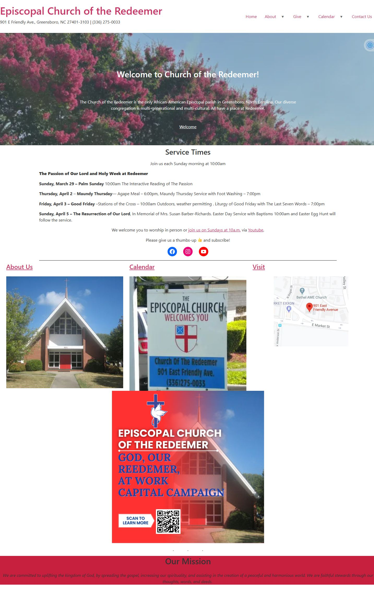
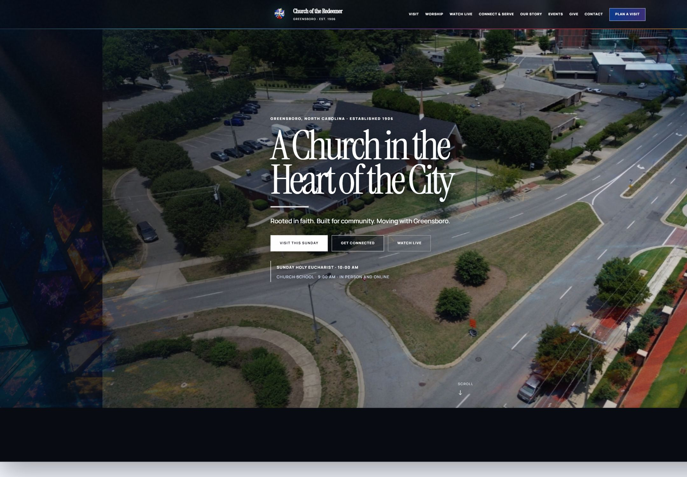

Work · Website
A church website rebuilt to work on every phone.
Church of the Redeemer, Greensboro. More than a century of history, and a website that made first-time visitors hunt for the basics.

Before: announcements first, visitors left to figure out where to start.

After: who they are, where they are, service times and three clear next steps.
The situation
The church had real information and a meaningful history, but the site was organized like a bulletin board. A first-time visitor had to decode church language and scroll long pages to find service times, directions or how to watch online. On phones, 9 of the 10 pages reviewed ran off the side of the screen.
The fix
A 19-page redesign organized around what visitors come to do: plan a visit, worship, watch online, connect, serve, learn and give. Every page has one purpose, one clear heading and one next step, and every page fits a phone screen.
What it means for your business
If customers have to work to find your hours, prices or phone number, they leave. The same approach — answer the first questions fast, make the next step obvious, fit every phone — works for a restaurant, a contractor or a law office.
This is a working redesign prototype. It hasn’t launched as the church’s live site yet, so the numbers above measure the pages themselves, not visitors or giving.